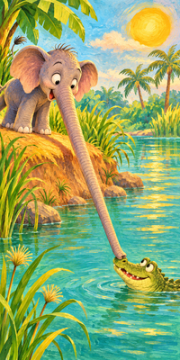
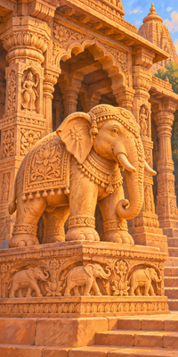

Литература
В сказке Редьярда Киплинга «Слонёнок» любопытный герой получает длинный хобот после встречи с крокодилом.
Общая информация | Слоны в искусстве | Слоны и человек

В сказке Редьярда Киплинга «Слонёнок» любопытный герой получает длинный хобот после встречи с крокодилом.
Дамбо — слонёнок из мультфильма студии Disney. Его огромные уши позволяют ему летать.

Образы слонов встречаются в индийской скульптуре и украшениях храмов. Слон может символизировать силу и мудрость.